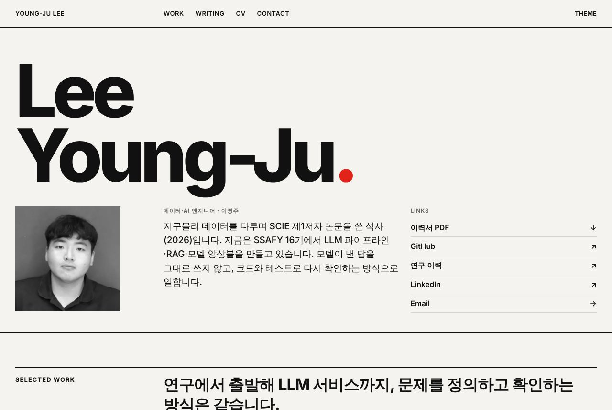
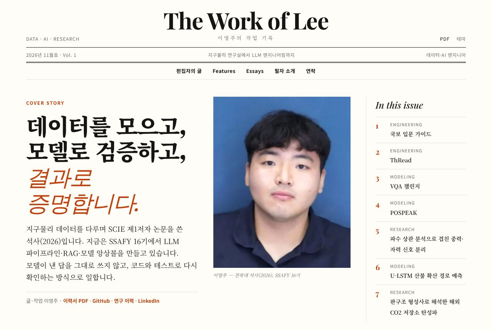
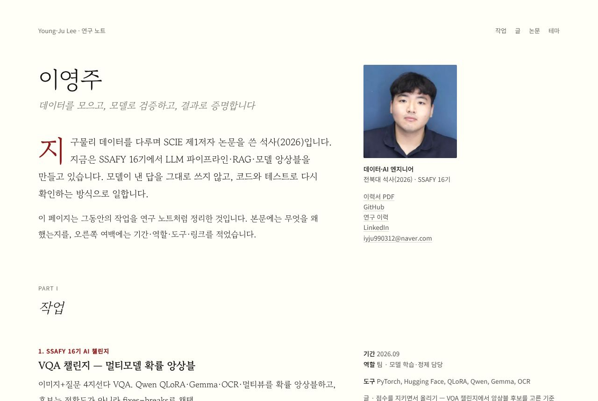
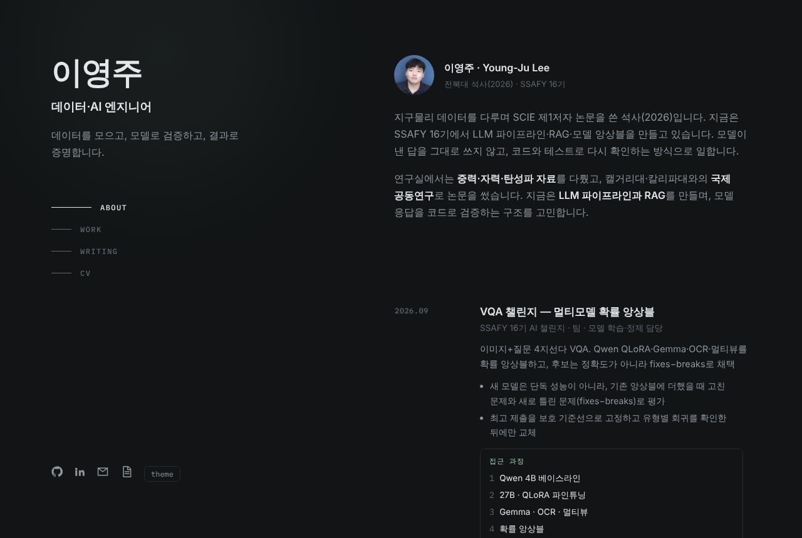
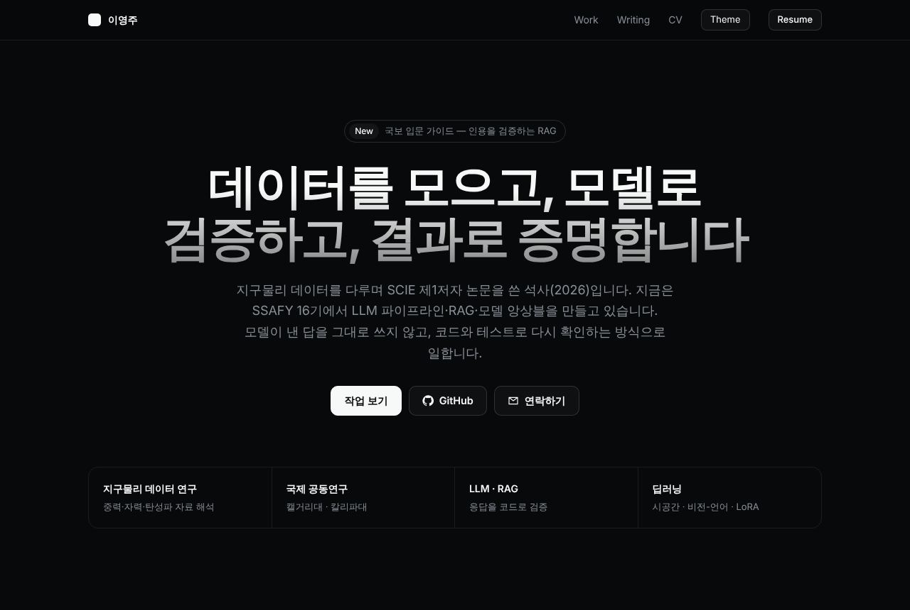
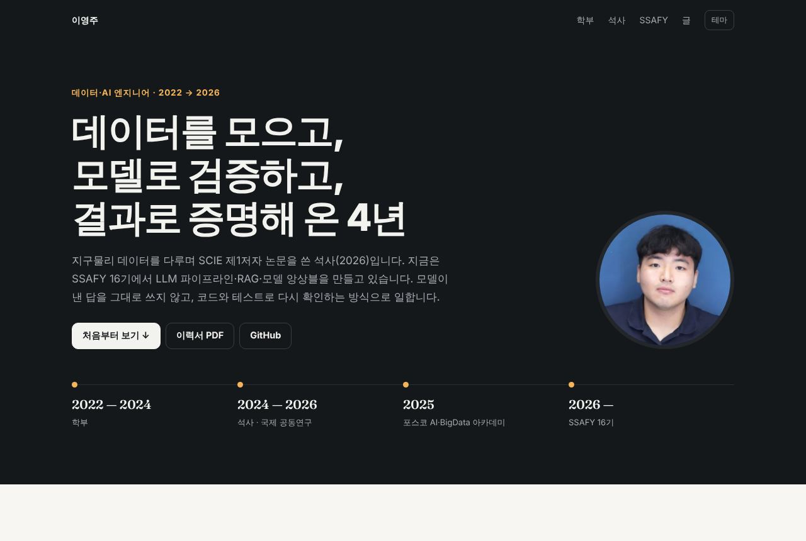
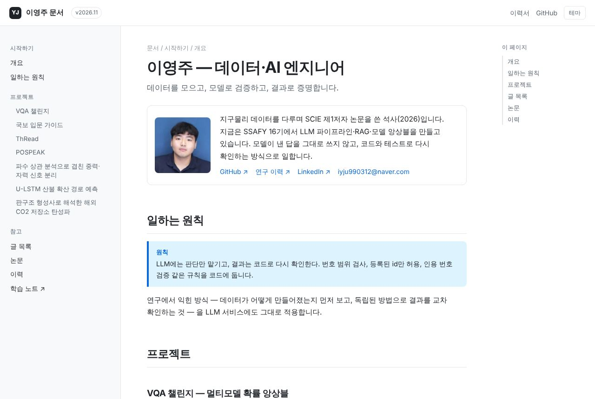
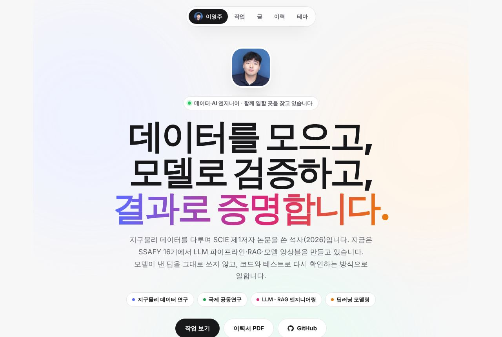
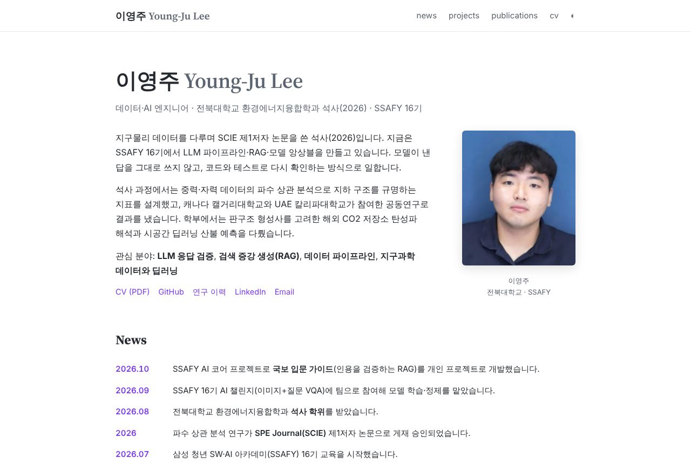
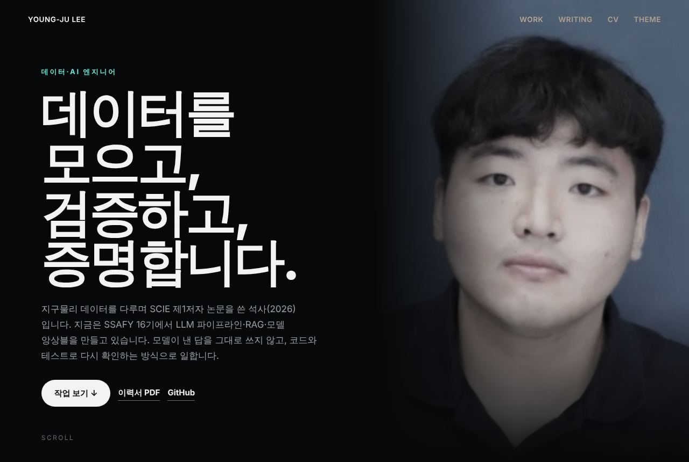

아직 실제 사이트(index.html)에는 반영하지 않았습니다. 시안을 열어 보고 마음에 드는 것을 알려 주시면 그 시안으로 바꾸고 영문 페이지까지 맞춰 반영합니다. 내용은 모두 같은 data/portfolio.yaml에서 나옵니다.

1 · Swiss Grid
2 · Magazine (v2)
3 · Research Notes
4 · Split Nav
5 · Product Dark
6 · Timeline Story
7 · Docs / Wiki
8 · Card Stack (v2)
9 · Academic Home
10 · Cinema참고: 스위스 타이포그래피 그리드 포트폴리오 템플릿(Konstrukt 등) — 12단 격자·그로테스크 글꼴·단일 강조색
종이색 배경, 검정 잉크, 빨강 한 가지. 이름을 아주 크게, 프로젝트는 12단 격자에 번호·제목·내용·그림을 칸 맞춰 배치. 정돈되고 단단한 인상.
시안 열기 →참고: 에디토리얼 포트폴리오 템플릿(Satz 등) — 표지·목차·기사·인용구 구성
v2: 제호(The Work of Lee)·발행호 표기, 표지 옆 'In this issue' 목차, 첫 글자 장식이 들어간 '편집자의 글', 전면 이미지의 커버 기사 + Engineering·Modeling·Research 분류 기사, 큰 인용구, 최신 에세이 강조, 필자 소개, 읽기 진행 막대, Colophon 푸터.
시안 열기 →참고: Tufte CSS — 본문 옆 여백에 주석을 두는 학술 문서 스타일
연구 노트처럼 본문에는 무엇을·왜, 오른쪽 여백에는 기간·역할·도구·링크. 바탕체 계열 글꼴, 첫 글자 장식. 연구 경력을 가장 자연스럽게 보여 줌.
시안 열기 →참고: Linear·Vercel 계열 제품 랜딩 — 평평한 다크, 1px 경계선, 강조색 하나(과한 글로우 자제)
제품 소개 페이지처럼 가운데 정렬 헤드라인, 분야 4칸 띠, 얇은 테두리 카드에 화면 캡처가 아래에서 올라오는 구성. 절제된 다크.
시안 열기 →참고: 연대기 스크롤형 포트폴리오 — 챕터·연도 고정·레일
2022 학부 → 2024 석사·국제 공동연구 → 2025 포스코 → 2026 SSAFY를 4개 챕터로. 연도가 왼쪽에 고정되고 프로젝트가 레일 위에 놓임. 성장 과정이 한눈에.
시안 열기 →참고: 개발 문서 사이트(GitHub Docs·Docusaurus류) — 왼쪽 문서 트리, 오른쪽 '이 페이지' 목차
포트폴리오를 기술 문서처럼. 프로젝트마다 정보 표(소속·기간·역할·도구), 원칙은 안내 상자, 접근 과정은 코드 블록풍. 개발자에게 익숙한 구조.
시안 열기 →참고: 스크롤하면 카드가 겹겹이 쌓이는 스태킹 카드 인터랙션(Framer 템플릿에서 흔한 패턴)
v2: 은은하게 움직이는 색 번짐 배경과 4개 분야 칩의 히어로, 다음 카드가 덮을 때 이전 카드가 살짝 작아지고 어두워지는 쌓임 효과, 오른쪽 진행 점, 창(window) 프레임 속 화면·접근 과정, 좌우로 넘기는 글 캐러셀, 벤토형 이력, 그라데이션 연락 카드. 모바일은 일반 목록·스와이프.
시안 열기 →참고: 연구자 홈페이지 테마(al-folio·Minimal Mistakes 계열) — 소개·뉴스·대표 논문·프로젝트
대학원 연구자 홈페이지 형식. 날짜별 News, 썸네일 붙은 대표 논문(PAPER·CODE·BLOG 버튼), 프로젝트 목록. 연구직·R&D 지원에 적합.
시안 열기 →참고: Awwwards류 케이스 스터디 사이트 — 풀스크린 인물 히어로, 와이드 이미지 밴드, 큰 타이포
현재 시안(어두운 히어로)과 가장 가까운 '극적인' 버전. 첫 화면은 큰 제목과 흐려진 인물 사진, 프로젝트는 Scene 01…로 와이드 이미지와 함께 한 장면씩.
시안 열기 →참고: 현재 사이트
어두운 히어로 + 학업 단계별(석사·학부·부트캠프) 큰 사례 카드. 지금 0ju12.github.io 에 적용된 시안.
시안 열기 →참고: Showcase Pro에서 수치 강조를 뺀 버전
Showcase Pro와 같은 구성에서 점수·지표를 크게 보여 주는 요소를 모두 뺐습니다. 첫 화면 숫자 행 대신 '지구물리 데이터 연구 · 국제 공동연구 · LLM·RAG 엔지니어링 · 딥러닝 모델링' 네 분야 소개, 프로젝트는 수치 칩 없이 문제와 접근 위주로, 이미지가 없는 프로젝트는 점수 대신 '접근 과정' 단계도로 보여 줍니다.
시안 열기 →참고: 현재 시안의 구성·색을 유지하고 다듬은 버전
현재 느낌(어두운 히어로 + 좌우 교차 사례)을 그대로 두고 다듬었습니다. Pretendard·숫자 정렬, 스크롤해도 따라오는 상단 메뉴, 버튼 7개를 주요 2개 + 아이콘 3개로 정리, 기울어진 사진 대신 프로필 카드, 이모지 대신 아이콘. 프로젝트는 7개로 나눠 화면 캡처는 브라우저 프레임, 그림은 캡션, 이미지가 없으면 핵심 수치 패널로 보여 줍니다.
시안 열기 →참고: Eugene Yan(eugeneyan.com)처럼 글과 사례 연구가 중심인 ML 엔지니어 사이트
종이 질감 배경, 세리프 제목, 고정폭 메타데이터. 프로젝트 7개를 '기간 · 제목 · 핵심 수치' 표로 보여 주고, 행을 누르면 사례가 펼쳐집니다. 읽는 사람이 30초 안에 전체를 훑을 수 있는 구조.
시안 열기 →참고: 국내 IT 기업 채용 페이지·서비스형 포트폴리오의 카드 UI
Pretendard, 밝은 카드 그리드. 화면 캡처가 있는 프로젝트는 썸네일로, 없는 것은 핵심 수치로 보여 줍니다. LLM·RAG / 딥러닝 / 데이터 / 연구 필터, 카드를 누르면 상세 창이 열립니다.
시안 열기 →참고: 개발자 도구·데이터 플랫폼 랜딩 페이지의 다크 테마
다크 + 격자 배경 + 고정폭 글꼴. 첫 화면에 '수집 → 정제 → 학습·색인 → 검증 → 결과' 흐름도를 두고, 각 단계에 실제로 쓴 도구를 적었습니다. 데이터 엔지니어 지원에 가장 직접적인 메시지.
시안 열기 →